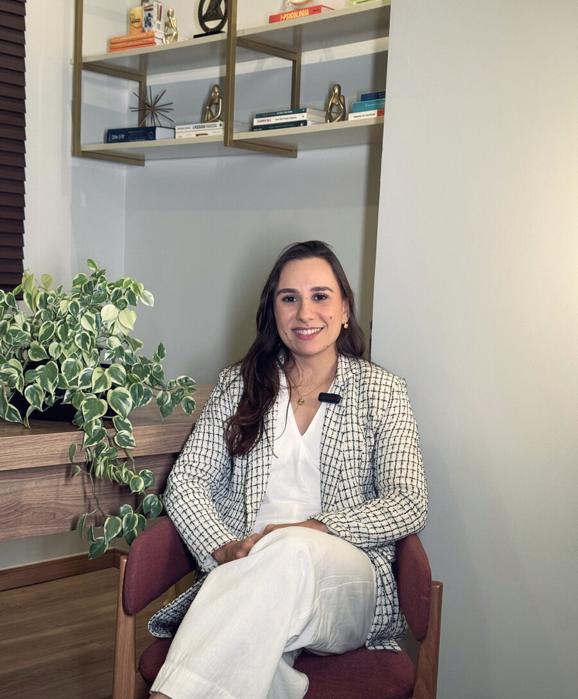

Fazer as pazes
com as suas emoções.
Terapia Cognitivo-Comportamental para reestruturar pensamentos e comportamentos, no seu ritmo — presencial em Patos de Minas ou online para qualquer lugar do mundo.
Uma trajetória construída com cuidado — comigo e com os outros.
Me chamo Júlia, sou natural de Patos de Minas e sempre fui uma pessoa interessada em cultivar o cuidado, comigo e com os outros.
Sou graduada em Psicologia pela Universidade Federal do Triângulo Mineiro e especialista em Terapias Cognitivas e Contextuais.
Meu interesse pela Psicologia apareceu na adolescência, com grande ímpeto em oferecer acolhimento por meio do meu trabalho. Ao longo dos anos de graduação, me apaixonei pelas abordagens interessadas em compreender a nossa forma de pensar e interpretar o mundo.
— Júlia Semei
Um pensamento automático não é um fato.
Na Terapia Cognitivo-Comportamental, aprendemos a identificar pensamentos automáticos e construir, aos poucos, formas mais flexíveis de interpretar o que vivemos. Toque nos cartões para ver esse processo.
"Eu vou estragar tudo, é melhor nem tentar."
↻ toque para reestruturar"Eu posso não fazer perfeito, e ainda assim vale a pena tentar."
↻ toque para voltar"Ninguém entende como eu me sinto."
↻ toque para reestruturar"Pode ser difícil de explicar, mas isso não significa que estou sozinho(a)."
↻ toque para voltarÉ exatamente esse processo — de forma individual, colaborativa e no seu tempo — que conduzimos juntas em consultório.
Especialidades e formato de atendimento
Um espaço pensado para adolescentes a partir de 16 anos e adultos, com atendimento individual e sessões de aproximadamente 50 minutos.
Terapias Cognitivas e Contextuais
Abordagem centrada em compreender e reestruturar a forma como pensamos, sentimos e nos comportamos diante da vida.
Intervenções para Ansiedade
Formação específica em intervenções voltadas para transtornos de ansiedade, com foco em estratégias práticas do dia a dia.
Psicologia do Esporte
Intervenções orientadas para atletas profissionais e amadores, com ênfase em performance e estilo de vida.
Como funciona a primeira sessão?
Um processo em três momentos, pensado para construir confiança antes de qualquer coisa.
Eu conheço você
Você irá me contar um pouco sobre você, sua rotina e história — e também o que te levou a buscar a psicoterapia. Te conhecer é importante, para que o processo tenha ainda mais o seu jeitinho.
Você me conhece
Não é fácil se abrir com uma pessoa desconhecida, não é mesmo? Para criarmos um vínculo terapêutico, falo um pouco sobre mim e como funciona a abordagem com que trabalho.
Plano terapêutico
A partir das suas demandas, apresento como a psicoterapia pode te auxiliar. De forma colaborativa, estabelecemos juntas as metas terapêuticas.
Valores das sessões
Atendimentos presenciais em Patos de Minas e online para o mundo todo, via Google Meet.
Pagamento por sessão individual, realizado antes do encontro por dinheiro ou Pix.
Pagamento adiantado referente a todas as sessões do mês (geralmente 4, para atendimentos semanais).
- Recibos emitidos pelo aplicativo da Receita Federal, vinculados ao CPF do pagador.
- Pagamento realizado antes da sessão, por dinheiro ou Pix, no ato da confirmação.
- Sessões online realizadas pelo Google Meet.
- Link da sessão disponibilizado pelo WhatsApp minutos antes.
O que você precisa saber antes de começar
Se a sua dúvida não estiver aqui, é só chamar no WhatsApp — respondo pessoalmente.
As sessões são sigilosas?
Sim. O sigilo é garantido pelo Código de Ética Profissional do Psicólogo e vale igualmente para as modalidades presencial e online. Tudo o que é dito em sessão permanece entre nós.
A terapia online funciona?
Sim. A modalidade é regulamentada pelo Conselho Federal de Psicologia e segue os mesmos cuidados do atendimento presencial. As sessões acontecem pelo Google Meet, com link enviado pelo WhatsApp minutos antes — você só precisa de um lugar reservado e conexão estável.
Atende por convênio ou plano de saúde?
O atendimento é particular. No entanto, os recibos emitidos — vinculados ao CPF do pagador — podem ser usados para solicitar reembolso ao seu plano de saúde, de acordo com as regras da sua operadora.
Qual a frequência e a duração das sessões?
As sessões têm aproximadamente 50 minutos e, em geral, acontecem semanalmente. A frequência é sempre combinada de forma colaborativa, de acordo com as suas demandas e o seu momento.
A partir de qual idade é o atendimento?
Atendo adolescentes a partir de 16 anos e adultos, sempre em formato individual.

Vamos começar?
"Como especialista, eu sempre estarei preparada para as nossas sessões. Mas a psicoterapia é sua e irá obedecer o seu ritmo e prioridades. Por isso, o processo é colaborativo e é importante que você seja ativo nele."
Falar com a Júlia no WhatsApp →